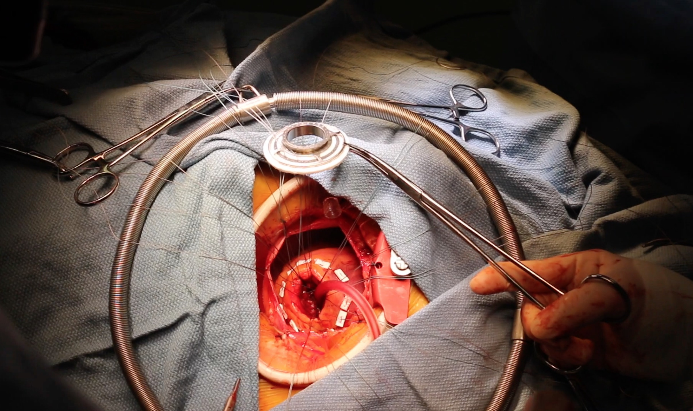
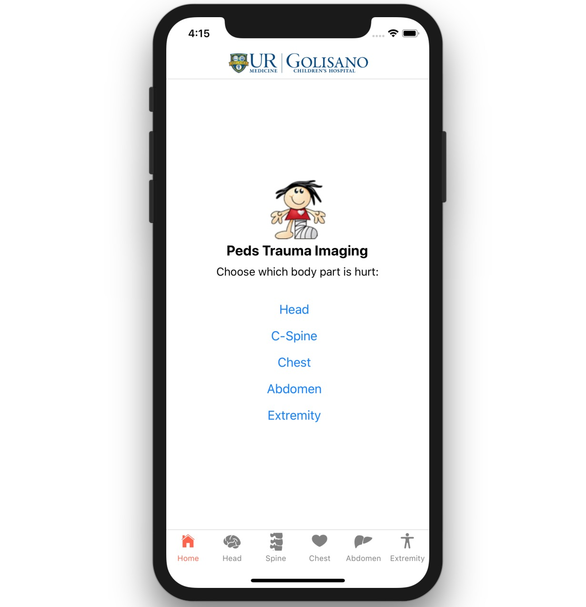

Brian Ayers, MD, MBA
Surgery Resident, Massachusetts General Hospital
Interests: Surgery and Machine Learning
View Full Resume
I am a current general surgery resident at The Massachusetts General Hospital. I previously completed a MD and MBA from the University of Rochester Medical School (Rochester, NY). I hope to pursue a career in cardiothoracic surgery because of the fascinating pathophysiology, the innovative technology and the elegant surgeries that combine to have a profound impact on patient lives.
My research interests are at the intersection of computer science and healthcare delivery. I studied machine learning during undergrad and fully believe this technology is going to fundamentally change the practice of medicine for the better. I want to help create innovative applications for machine learning and patient engagement tools in healthcare.
I am always interested in new ideas so if there is anything I can do to help please do not hesitate to reach out
Education


Experience
Research Fellow
Aguirre Digital Health Lab, Harvard
***
Consultant
Gesund.ai
I work part-time as a consultant for the medical AI startup Gesund, ai. We are developing a full-stack machine learning platform that allows for the thorough and secure validation of medical AI algorithms. The platform facilities all aspects of the ML development lifecycle, from 3D smart annotation tools during data preparation through multi-reader, multi-case studies for model validation. My reponsibilities span throughout the organization. Utilizing my background in both medicine and machine learning I act as a bridge between the clinical and technical teams. I provide clinical insights, research activities, business development, and at times even contribute to the code base.
Venture Fellow

DigitalDX Ventures
***
Research
Select publications
-
Venoarterial ECMO Without Routine Systemic Anticoagulation Decreases Adverse Events
(2019)
-
Implantation of a Fully Magnetically Levitated Left Ventricular Assist Device Using a Sternal-Sparing Surgical Technique
(2019)
-
Enabling Atrial Fibrillation Detection Using a Weight Scale
(2016)
-
Predicting Survival after Extracorporeal Membrane Oxygenation using Machine Learning
(2020)
-
Using Machine Learning to Improve Survival Prediction After Heart Transplantation
(2021)
-
Patient-Reported Outcomes Measurement Information System (PROMIS) in Left Ventricular Assist Devices
(2020)
-
Minimally invasive off-pump surgical pulmonary embolectomy for improved patient-centred care
(2020)
-
Development of a High-Fidelity Coronary Artery Bypass Graft Training Platform Using 3D Printing and Hydrogel Molding
(2020)
-
Long‐term renal function after venoarterial extracorporeal membrane oxygenation
(2021)
Other prior projects

Big Data for Mechanical Circulatory Support Devices
Patients supported by extracoporeal membrane oxygenation (ECMO) or a left ventricular assist device (LVAD) have an incredible amount of data associated with their clinical course. These are important life-saving treatments for many patients, but are associated with a great deal of morbidity and mortality. During my research year during medical school I worked with the team at University of Rochester to use modern big data analytical techniques combined with machine learning to create predictive models capable of providing insight to aid in the complex clinical decision making. We created databases directly from the EHR at an unprecedented scale for this patient population, such as over 3 million lab values and over 500k echo/cath results to try and improve patient care.
Select Publications:Predicting Survival after Extracorporeal Membrane Oxygenation using Machine Learning
Surgical Simulation: 3D Printed Heart
Dr. Ghazi and his team of biomechanical engineers have made incredible progress in the development of high-fidelity surgical simulation models. These 3D printed models are built from actual patient CT scans and can be sutured, cauterized and will bleed just like real tissue. I worked with his incredibly skilled team to help develop a cardiac model to create a realistic surgical simulation for cardiac procedures without the need of animal models. The beating of the heart is controlled by a custom code run on an arduino with an associated touch screen user interface to let the practicing surgeons control rate and rhythm.
Select Publications:Development of a High-Fidelity Coronary Artery Bypass Graft Training Platform Using 3D Printing and Hydrogel Molding

Pediatric Trauma App
Dr. Wakeman and the URMC pediatric surgery team have created flowsheet algorithms for determining when a pediatric trauma patient requires imaging. Implementation of these clinical resources in the ED, which describe the proper utilization of imaging for this patient population, has decreased unnecessary radiation for our pediatric patients. I worked with the team to create an easily distributed and user-friendly mobile app for these algorithms. The interactive mobile app was built on the react native framework and is currently in clinical beta testing in the ED.
Photos


Contact
BrianC.Ayers [at] gmail.com
Boston, MA, USA
© 2021 Brian Ayers | Boston, MA | Rochester, NY